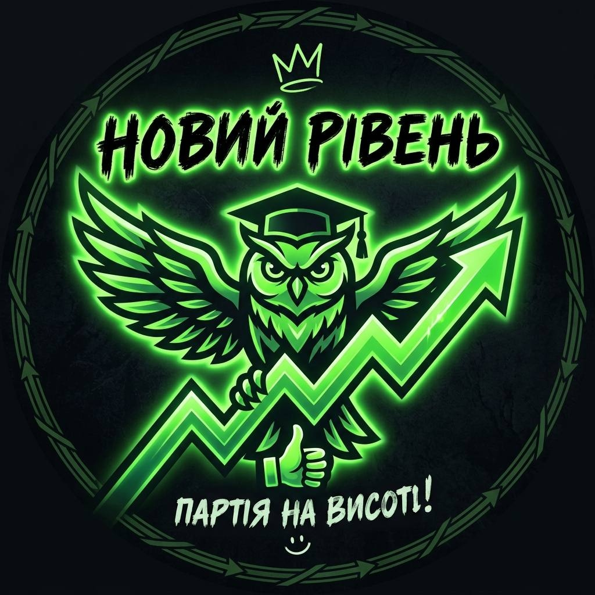

Новий Рівень
Партія на висоті! :)
Привіт, ліцейська родино! Настав час детально розповісти про кожний пункт нашої програми та пояснити, як саме ми втілюватимемо ваші ідеї в життя.
Пошта ідей та щотижневі опитування ✉️
Ми хочемо, щоб голос кожного з вас був почутий. Ми запроваджуємо систему постійного зворотного зв'язку та щотижня проводитимемо опитування щодо ваших інтересів, пропозицій і бажань. Жодна цікава ідея не залишиться поза увагою — ми обговорюватимемо їх та узгоджуватимемо з адміністрацією для швидкої реалізації!
Комп'ютерні активності та кіберспорт 🎮
Ми за якісний відпочинок після уроків! Якщо збиратиметься достатня кількість учасників, ми організовуватимемо ігрові вечори в Discord («Бункер», «Мафія», Jackbox, Kahoot), а також проведемо повноцінні командні турніри з ваших улюблених ігор.
Реформування учнівської ради 🤝
Ми хочемо зробити учнівську раду дійсно сучасною та робочою. Зібрання стануть регулярними (зокрема онлайн у Discord), а до складу ради увійдуть справді вмотивовані учні, які готові діяти та реалізовувати проєкти, а не просто значитися у списках.
Ліцейський альбом 📸
Ми створимо спільний відкритий альбом — історію нашого ліцею! Кожен клас зможе надсилати туди свої найкрутіші, найсмішніші та найпам'ятніші фотографії. Ми їх роздрукуємо, і цей альбом буде доступний у ліцеї для кожного з вас.
Тематичні дні та збереження традицій 🎃🎄
Ми наполягатимемо на тому, щоб усі наші яскраві традиції обов'язково зберігалися та розвивалися! На Хеловін ми вдягаємо круті костюми, на Новий рік — знімаємо традиційні ліцейські фільми та ролики, а також проводимо День без рюкзаків, День св. Валентина та інші тематичні дні. Тематику наступних днів ми обиратимемо разом із вами через опитування!
Розвиток та піар ліцейського TikTok 📱
У нашого ліцею є свій TikTok, і ми хочемо зробити його популярним! Ми шукаємо активних, креативних хлопців та дівчат, які хочуть знімати контент, тренди та розвивати наш акаунт. Якщо ти хочеш спробувати себе в ролі медіа-мейкера — двері нашої команди відкриті!
Проведення дискотек у ліцеї 🪩
Дискотекам бути! Ми організовуватимемо ліцейські вечірки, де кожен зможе розслабитися, відкинути комплекси та круто провести час із друзями під хорошу музику.
Зробимо шкільне життя яскравим разом! 🚀
Пам'ятайте: ви завжди можете звернутися до нас із будь-яким питанням чи ідеєю. Ми поруч і готові допомагати як у шкільних ініціативах, так і в навчанні!
Голосуйте за кандидатів від партії «Новий рівень»!